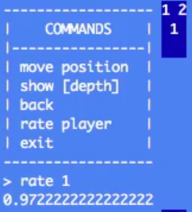
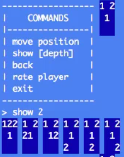

Test your code
we all know this
You shouldn't be able to use an object incorrectly
User = Struct.new :first_name, :last_name do
def full_name
@full_name ||= "#{first_name} #{last_name}"
end
end
user = User.new 'Paul', 'Pagel'
user.full_name
# => "Paul Pagel"
user.first_name = 'Margaret'
user.full_name
# => "Paul Pagel"
In this case: mutable state breaks caching
Don't hard-code assumptions
Don't assume a current "always"
Leave room for new use cases
class Loan < ActiveRecord::Base
after_create :notify_user_they_got_the_loan
end
Loan.create!(user: .., apr:..., amount:...)
Do I really
ALWAYS
want to do this? Even if there are regulations, don't assume "yes".
Build yourself tools
Take the time to make your environment better


Avoid modules (inheritance)
Choose composition instead
class SomethingController < ApplicationController
def create
Rails.version # => "4.0.0"
singleton_class.ancestors.size # => 63
methods.size # => 336
end
end
Don't invent requirements
None of
this
nonsense is necessary
All dependencies point downwards
calculator = Calculator.new(self, @apr)
If our class is immutable, this isn't such a big deal,
we can think of it as dependency inversion.
But we can't see how we change based on what this class does to us.
Don't mutate inputs
Especially to the outside world and to inputs.
Work with values.
def accrue_interest(loan, start_date, end_date)
loan.accrued_interest = (loan.daily_interest_rate * loan.principal) *
(start_date - end_date)
end
becomes
def interest_accrued_over(loan, start_date, end_date)
(loan.daily_interest_rate * loan.principal) *
(start_date - end_date)
end
loan.accrued_interest = interest_accrued_over loan,
start_date,
end_date
Tend towards primitives
def interest_accrued_over(loan, start_date, end_date)
(loan.daily_interest_rate * loan.principal) *
(start_date - end_date)
end
loan.accrued_interest = interest_accrued_over loan,
start_date,
end_date
becomes
def interest_accrued_over(daily_interest_rate, principal,
start_date, end_date)
(daily_interest_rate * principal) *
(start_date - end_date)
end
loan.accrued_interest = interest_accrued_over loan.daily_interest_rate,
loan.principal,
start_date,
end_date
interest_accrued_over D('1.23'), D('500'), start_date, end_date
Remove Temporal Coupling
Separate an object with a specific order of calls into a function and data structure
class Inputs < Struct.new(:payments, :sum)
def initialize(loan)
self.loan = loan
end
def calculate
self.payments = @loan.payments.incoming.successful
self.sum = payments.map(&:amount).sum
end
end
becomes
class Inputs < Struct.new(:payments, :sum)
def self.for(loan)
payments = loan.payments.incoming.successful
sum = payments.map(&:amount).sum
new(payments, sum)
end
end
Remove knowledge Coupling
This takes many forms
def update_login(user, login)
BackEnd::User.update user.id, login: login, email: login
end
Wait, why are we updating email?
Push that down to the back end
Don't hide important details under abstractions
def padded_take ary, n
pad(ary, n).take(n)
end
- What are we padding with?
- Are we padding the left or right side?
- Is the padding done eagerly or lazily?
def pad ary, n
pad_length = [0, n - ary.length].max
ary + [0] * pad_length
end
Function Objects
class CreateLoanApplication
def initialize(loan, ...)
@loan = loan
end
def call # no inputs
# ...
end
private
# ...
end
More on Function Objects :D
Advantages
- An obvious place to start (when reading)
- No state (impossible to become a bad object)
- SRP
- Explicit arguments
- Answers `C.new.meth(arg)` or `C.new(arg).meth`
Explicit Inputs
- Pass in everything you need to do the job, don't rely on the external context
- Makes debugging much easier
- Reduces the amount of state that you need to keep in your head
- Makes refactoring easier
- Easier to test
Examples of Explicit Inputs
def do_something(a, b)
@c + ARGV.select { |arg| ... }
end
becomes
def do_something(argv, a, b, c)
c + argv.select { |arg| ... }
end
another example
class SomethingController < ApplicationController
def create
# what can I even do in here?
end
end
Kick everything off explicitly
class Loan
after_create :notify_user_they_got_the_loan
end
becomes
class CreateLoan
def call(...)
loan = Loan.new(...)
notify_user_they_got_the_loan if loan.save
end
end
Caller is responsible for formatting inputs
def notify_user(user_or_id, message)
user = user_or_id
user = User.find user_or_id unless user.kind_of? User
# ...
end
becomes
def notify_user(user, message)
# ...
end
Avoid magic
FactoryGirl.define do
factory :contract do
contract_template
decision 'approved'
lender { Lender["netcredit"] }
end
factory :contract_template do
# ...
end
end
Avoid metaprogramming
- Methods you can't see but can call
- Don't know who self is
- Can't guess how to use something
- Can't see consequences
- saving local variables because method invocations stop working
Be wary of DSLs
- Don't know who self is
- Can't see where things come from or go to
- Can't see what can modify what
- Often involve singletons
- Often affect state (e.g. Capybara DSL)